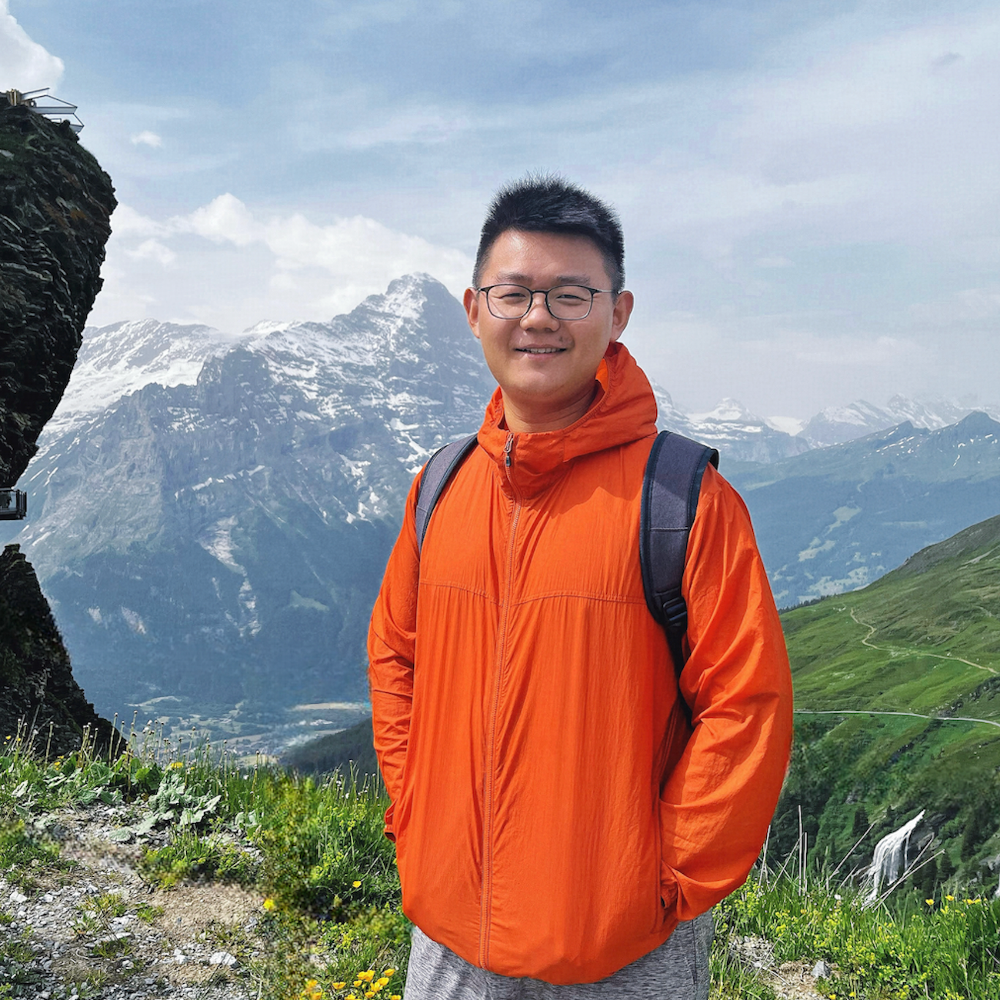
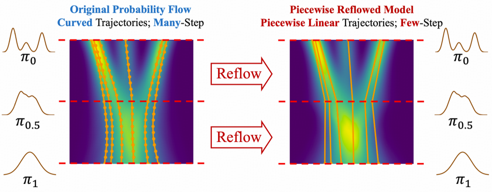
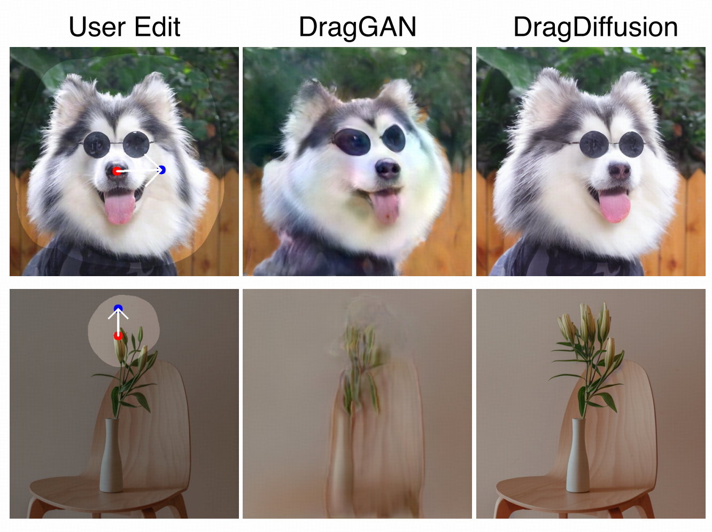
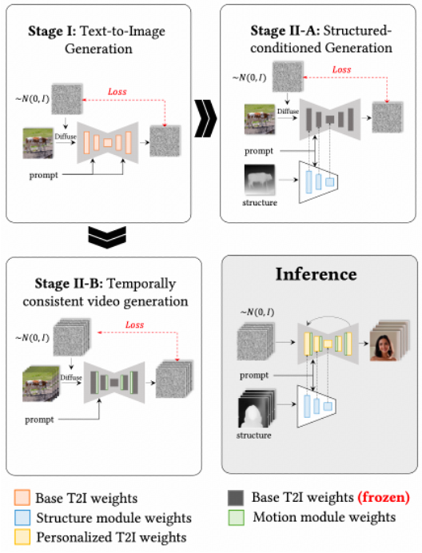
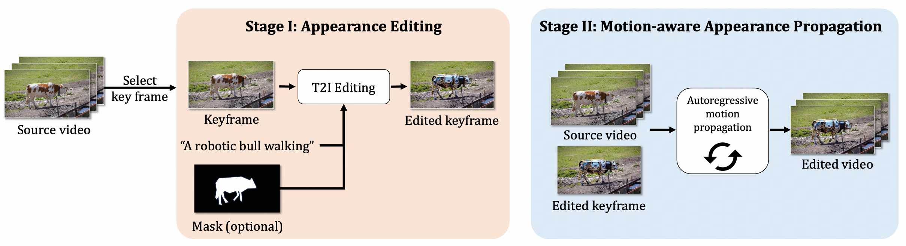
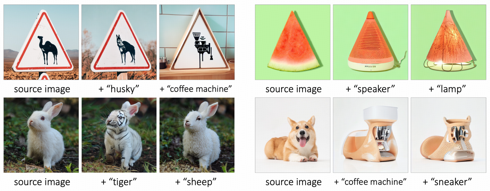
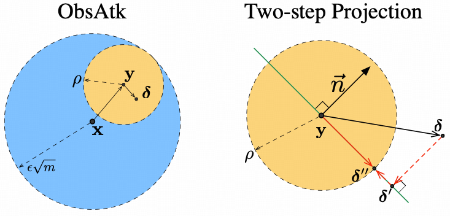
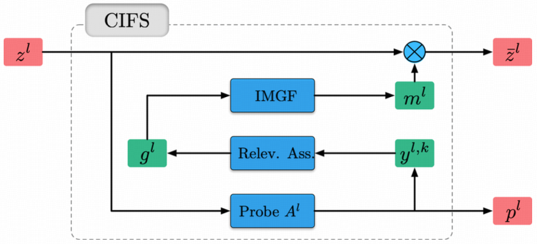
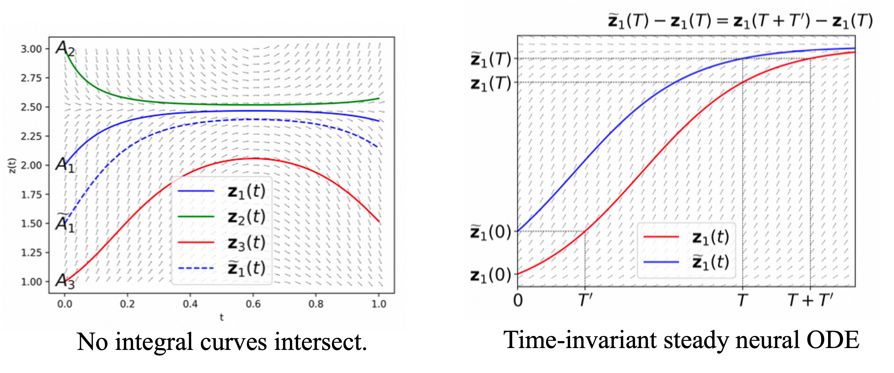
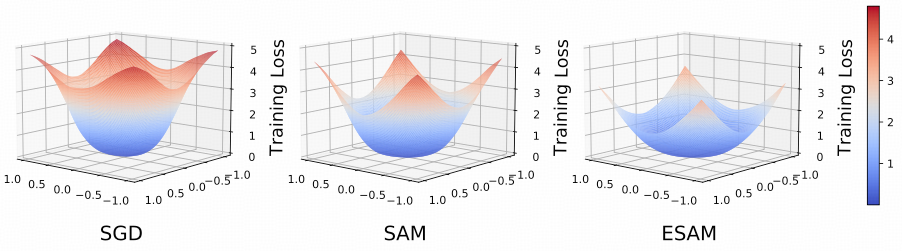

|  |
Senior Research Scientist @ Rhymes.AI Ph.D in Machine Learning @ NUS : hanshu.yan@outlook.com |
He obtained PhD from NUS in 2022 with a research focus on robust deep vision models and optimizers. His current work focuses on multimodal generation and understanding. He has led or co-led several relevant projects, including MagicEdit and MagicAvatar for video editing, PeRFlow for diffusion acceleration, and AdjointDPM for controllable generation. He was also involved in several large-scale video generation projects, including MagicVideo and Allegro. He will be dedicated to developing efficient and powerful models for video generation and understanding.
Academic Service: reviewer for ICML, ICLR, NeurIPS, CVPR, ACM Multimedia, etc.Experiences
| Senior Research Scientist | Rhymes.AI, Singapore | 07/2024 - Present |
| Research Scientist | ByteDance, Singapore | 07/2022 - 07/2024 |
| Reserach Engineer | NUS, Singapore | 07/2017 - 07/2018 |
Selected Papers
( * Equally contributed; ^AIGC, ^ML robustness, ^Learning algorithms, )|  |
^ PeRFlow; Piecewise Rectified Flow as Universal Plug-and-Play Accelerator. Hanshu Yan, Xingchao Liu, Jiachun Pan, Jun Hao Liew, Qiang Liu, Jiashi Feng NeurIPS 2024 home[Page] |
|  |
^ DragDiffusion: Harnessing Diffusion Models for Interactive Point-based Image Editing. Yujun Shi, Chuhui Xue, Jun Hao Liew, Jiachun Pan, Hanshu Yan, Wenqing Zhang, Vincent Y. F. Tan, Song Bai CVPR 2024 home[Page] ^ LightningDrag: Lightning Fast and Accurate Drag-based Image Editing Emerging from Videos. Yujun Shi, Jun Hao Liew, Hanshu Yan, Vincent Y. F. Tan, Jiashi Feng arXiv 2024 |
 |
^ MagicVideo-V2: Multi-Stage High-Aesthetic Video Generation. Weimin Wang, Jiawei Liu, Zhijie Lin, Jiangqiao Yan, Shuo Chen, Chetwin Low, Tuyen Hoang, Jie Wu, Jun Hao Liew, Hanshu Yan, Daquan Zhou, Jiashi Feng arXiv 2024 home[Page] ^ MagicVideo: Efficient Video Generation With Latent Diffusion Models. Daquan Zhou, Weimin Wang, Hanshu Yan, Weiwei Lv, Yizhe Zhu, Jiashi Feng arXiv 2023 home[Page] |
|  |
^ MagicEdit: High-Fidelity and Temporally Coherent Video Editing. Jun Hao Liew*, Hanshu Yan*, Jianfeng Zhang, Zhongcong Xu, Jiashi Feng arXiv 2023 home[Page] ^ MagicAvatar: Multimodal Avatar Generation and Animation. Jianfeng Zhang*, Hanshu Yan*, Zhongcong Xu*, Jiashi Feng, Jun Hao Liew* arXiv 2023 home[Page] ^ MagicAnimate: Temporally Consistent Human Image Animation using Diffusion Model . Zhongcong Xu, Jianfeng Zhang, Jun Hao Liew, Hanshu Yan, Jia-Wei Liu, Chenxu Zhang, Jiashi Feng, Mike Zheng Shou CVPR 2024 home[Page] |
|  |
^ MagicProp: Diffusion-based Video Editing via Motion-aware Appearance Propagation. Hanshu Yan*, Jun Hao Liew*, Long Mai, Shanchuan Lin, Jiashi Feng arXiv 2023 |
 |
^ AdjointDPM: Adjoint Sensitivity Method for Gradient Backpropagation of Diffusion Probabilistic Models. Jiachun Pan*, Jun Hao Liew, Vincent Y. F. Tan, Jiashi Feng, Hanshu Yan* ICLR 2024 home[Page] ^ SAG: Towards Accurate Guided Diffusion Sampling through Symplectic Adjoint Method. Jiachun Pan*, Hanshu Yan*, Jun Hao Liew, Jiashi Feng, Vincent Y. F. Tan arXiv 2023 |
|  |
^ MagicMix: Semantic Mixing with Diffusion Models. Jun Hao Liew*, Hanshu Yan*, Daquan Zhou, Jiashi Feng arXiv 2022 |
|  |
^ Towards Adversarially Robust Deep Image Denoising. Hanshu Yan, Jingfeng Zhang, Jiashi Feng, Masashi Sugiyama, Vincent Y. F. Tan IJCAI 2022 |
|  |
^ CIFS: Improving Adversarial Robustness of CNNs via Channel-wise Importance-based Feature Selection. Hanshu Yan, Jingfeng Zhang, Gang Niu, Jiashi Feng, Vincent Y. F. Tan, Masashi Sugiyama ICML 2021 |
|  |
^ On Robustness of Neural Ordinary Differential Equations. Hanshu Yan, Jiawei Du, Vincent Y. F. Tan, Jiashi Feng ICLR 2020 Spotlight |
|  |
^ Efficient Sharpness-aware Minimization for Improved Training of Neural Networks . Jiawei Du, Hanshu Yan, Jiashi Feng, Joey Tianyi Zhou, Liangli Zhen, Rick Siow Mong Goh, Vincent Y. F. Tan ICLR 2022 |
 |
^ Towards Understanding Why Lookahead Generalizes Better Than SGD and Beyond. Pan Zhou, Hanshu Yan, Xiaotong Yuan, Jiashi Feng, Shuicheng Yan NeurIPS 2021 |